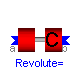
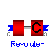
 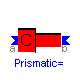
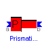
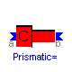
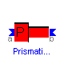
This package contains cut-joint models.
Release Notes:
Copyright © 2000-2002, DLR.
The Modelica package is free software; it can be redistributed and/or modified under the terms of the Modelica license, see the license conditions and the accompanying disclaimer in the documentation of package Modelica in file "Modelica/package.mo".
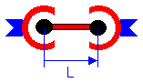
A ConnectingRod instance is a rod which has a spherical joint on each of its two ends. It has 5 degrees of freedom. It has no mass and no inertia and is used as cut joint to break a kinematic loop of a multibody system. It is highly recommended to use this cut-joint whenever possible, because this enhances the efficiency considerably. There is a similiar cut-joint, model ConnectingRod2, which allows additionally to define mass and inertia proporties of the rod. Parameters: L: Length of the rod in [m] The single constraint equation on position level states, that the distance between the origins of frame_a and frame_b is equal to the length of the rod. As constraint force fRod (= Lagrange multiplier) of the joint the force in the rod is used.
| Name | Default | Description |
|---|---|---|
| L | 1 | Length of the rod [m] |
model ConnectingRod "Massless rod between two spherical joints used as Cut-Joint" extends Interfaces.CutJoint; parameter SI.Length L=1 "Length of the rod"; SI.Force fRod "Constraint force in direction of the rod"; protected Real constraintResidue; Real constraintResidue_d; Real constraintResidue_dd; equation // Constraint equations on position, velocity and acceleration level constraintResidue = (r_rela*r_rela - L*L)/2; constraintResidue_d = r_rela*v_rela; constraintResidue_dd = r_rela*a_rela + v_rela*v_rela; constrain(constraintResidue, constraintResidue_d, constraintResidue_dd); // constraintResidue = 0; /*Cut-forces/torques at frame_a/B as function of the constraint force (r_rela/L is a unit vector in direction of the rod) */ ta = zeros(3); tb = zeros(3); fa = fRod*r_rela/L; fb = S_rel*fa; end ConnectingRod;
ModelicaAdditions.MultiBody.CutJoints.ConnectingRod2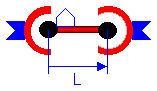
A ConnectingRod2 instance is a rod which has a spherical joint on each of its two ends.
It has 5 degrees of freedom. It has no mass and no inertia and is used as cut
joint to break a kinematic loop of a multibody system. It is highly recommended
to use this cut-joint whenever possible, because this enhances the efficiency
considerably.
The third cut frame_c is a frame fixed in the rod at the origin of frame_a
(definition of frame_c: x-axis = rod-axis from frame_a to frame_b;
y-axis = orthogonal to x-axis and to vector na which is fixed in frame_a).
At frame_c body objects can be connected to describe the mass and inertia
proporties of the rod. Since there are spherical joints at each end of the
rod, there is an isolated degree of freedom which allows the rotation of the
rod along the rod axis. This movement usually has no influence on the rest of
the multibody system and is of no technical interest. Mathematically, this
degree of freedom is removed by the additional constraint equation that
the y-axis of frame_c is always orthogonal to the pre-defined vector
na which is fixed in frame_a.
Parameters:
L : Length of the rod in [m]
na: Vector fixed in frame_a (i.e., fixed in the body which is
connected at frame_a) and resolved with respect to the
inertial frame in the home position. The y-axis of the rod-fixed
frame_c is defined to be orthogonal to the x-axis and to
vector na.
The single constraint equation on position level states, that the
distance between the origins of frame_a and frame_b is equal
to the length of the rod. As constraint force fRod (= Lagrange multiplier)
of the joint the force along the rod axis is used.
| Name | Default | Description |
|---|---|---|
| L | 1 | Length of the rod [m] |
| na[3] | {0,0,1} | orthogonal to y-axis of cut-frame C |
model ConnectingRod2
"Massless rod between two spherical joints used as Cut-Joint (body can be attached)"
extends Interfaces.CutJoint;
parameter SI.Length L=1 "Length of the rod";
parameter Real na[3]={0,0,1} "orthogonal to y-axis of cut-frame C";
SI.Force fRod "Constraint force in direction of the rod";
protected
Real Sc[3, 3];
Real r0c[3];
Real vc[3];
Real wc[3];
Real ac[3];
Real zc[3];
Real fc[3];
Real tc[3];
Real fb_a[3] "cut-force fb resolved in cut a";
Real b1[3];
Real bd[3];
Real bdd[3];
Real normb;
Real bb;
Real nx[3];
Real ny[3];
Real nz[3];
Real S_relc[3, 3];
Real nxd[3];
Real nyd[3];
Real nzd[3];
Real w_relc[3];
Real nxdd[3];
Real nydd[3];
Real nzdd[3];
Real z_relc[3];
Real constraintResidue;
Real constraintResidue_d;
Real constraintResidue_dd;
public
Interfaces.Frame_b frame_c(
S=Sc,
r0=r0c,
v=vc,
w=wc,
a=ac,
z=zc,
f=-fc,
t=-tc);
equation
// Constraint equations on position, velocity and acceleration level
constraintResidue = (r_rela*r_rela - L*L)/2;
constraintResidue_d = r_rela*v_rela;
constraintResidue_dd = r_rela*a_rela + v_rela*v_rela;
constrain(constraintResidue, constraintResidue_d, constraintResidue_dd);
// constraintResidue = 0;
/*Compute relative transformation matrix S_relc (cut a cut c) and
absolute transformation matrix Sc (cut c inertial system)*/
nx = r_rela/L;
b1 = cross(na, nx);
normb = sqrt(b1*b1);
ny = b1/normb;
nz = cross(nx, ny);
S_relc = transpose([nx, ny, nz]);
Sc = Sa*transpose(S_relc);
/*Compute relative angular velocity w_relc and absolute angular velocity wc
(both w_relc and wc are resolved in cut-frame C):
w_relc = vec(S_relc*der(S_relc')), where h=vec([ 0, -h3, h2
h3, 0, -h1
-h2, h1, 0 ])
nxd = der(nx), nxdd = der(nxd)
nyd = der(ny), nydd = der(nyd)
nzd = der(nz), nzdd = der(nzd)
nyd = der( b/normb )
= der(b)/normb + b*der(1/normb)
= der(b)/normb - b*( ny'*der(b)/normb ) / normb
= der(b)/normb - ( ny'*der(b)/normb )*ny
= bd - (ny'*bd)*ny
*/
nxd = v_rela/L;
bd = cross(na, nxd)/normb;
bb = ny*bd;
nyd = bd - bb*ny;
nzd = cross(nxd, ny) + cross(nx, nyd);
w_relc = {nz*nyd,nx*nzd,ny*nxd};
wc = S_relc*wa + w_relc;
/*Compute relative angular acceleration z_relc and absolute angular
acceleration zc, with z_relc = der(w_relc).
der(bd) = cross(na,nxdd)/normb - cross(na,nxd)*der(1/normb)
= cross(na,nxdd)/normb + cross(na,nxd)*( ny'*der(b)/normb ) / normb
= cross(na,nxdd)/normb + bd*(ny'*bd)
der(nyd) = der(bd) - der(bb)*ny - bb*der(ny)
= der(bd) - (nyd'*bd + ny'*der(bd))*ny - bb*nyd
*/
nxdd = a_rela/L;
bdd = cross(na, nxdd)/normb - bb*bd;
nydd = bdd - (nyd*bd + ny*bdd)*ny - bb*nyd;
nzdd = cross(nxdd, ny) + cross(nx, nydd) + 2*cross(nxd, nyd);
z_relc = {nz*nydd + nzd*nyd,nx*nzdd + nxd*nzd,ny*nxdd + nyd*nxd};
zc = S_relc*za + cross(wc, w_relc) + z_relc;
/*Compute translational quantities of cut c*/
r0c = r0a;
vc = S_relc*va;
ac = S_relc*aa;
/*Compute cut-forces/torques at frame_a/B as function of the constraint force:
(1) Cut frame_b is a spherical joint. Therefore, tb=0.
(2) Due to the requirement that the x-y plane of the rod-fixed frame is
always perpendicular to vector na (fixed in frame_a), frame_a is a spherical
joint with restrictions leading to two degrees of freedom.
That is, the rod is rotated along its axis nx in such a way that
this requirement is fulfilled. As a consequence, there is a constraint
torque along axis nx. The torques in ny and nz direction are zero, i.e.,
ny'*ta = 0, nz'*ta = 0.
(3) The force in the direction of the rod is used as unknown constraint
force, i.e., fRod = nx'*fb
(4) force-balance (resolved in cut a): fa = fc_a + fb_a
(5) torque-balance (resolved in cut c): ta_c = tc + cross(r,fb_c)
where: - fb_a, fc_a are forces fb, fc resolved in cut a
- ta_c, fb_c are ta, fb resolved in cut c
- r is the distance vector from cut a to cut b resolved in cut c,
i.e., r=nx*L
due to (5,2): [ta_c(1); 0; 0] = tc + cross([L;0;0], fb_c)
or ta_c(1) = tc[1] + 0
0 = tc[2] - L*fb_c(3)
0 = tc[3] + L*fb_c(2)
or ta_c(1) = tc[1]
fb_c = [ fRod
-tc[3]/L
tc[2]/L]
fa can be computed with (4)
*/
fb_a = transpose(S_relc)*{fRod,-tc[3]/L,tc[2]/L};
fb = S_rel*fb_a;
fa = fb_a + transpose(S_relc)*fc;
tb = zeros(3);
ta = nx*tc[1];
end ConnectingRod2;
ModelicaAdditions.MultiBody.CutJoints.Spherical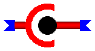
A spherical joint is a joint with 3 rotational degrees of freedom. An instance of this class is used as cut joint to break a kinematic loop of a multibody system. The 3 constraint equations on position level state, that the distance between the origins of frame_a and frame_b is zero. As constraint forces fc (= Lagrange multipliers) of the joint fc = fa is used, i.e., the cut-forces at frame_a.
model Spherical "Spherical joint used as Cut-Joint" extends Interfaces.CutJoint; SI.Force fc[3] "Constraint forces in direction of fa"; protected Real constraintResidue[3]; Real constraintResidue_d[3]; Real constraintResidue_dd[3]; equation /* Constraint equations on position, velocity and acceleration level */ constraintResidue = r_rela; constraintResidue_d = v_rela; constraintResidue_dd = a_rela; constrain(constraintResidue, constraintResidue_d, constraintResidue_dd); // constraintResidue = zeros(3); /*Cut-forces/torques at frame_a as function of the constraint forces*/ ta = zeros(3); tb = zeros(3); fa = fc; fb = S_rel*fc; end Spherical;
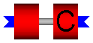
A revolute joint is a joint with 1 rotational degree of freedom.
An instance of this class is used as cut joint to break a kinematic
loop of a multibody system. Note, that a CutJoint.Revolute joint cannot
be used in a planar (2D) loop, since here e.g. the constraint force
orthogonal to the plane of the loop is not unique if only rigid
bodies are within the loop. For a unique solution, additional
assumptions have to be made, e.g., that this force is zero.
These additional assumptions are stated in class RevoluteCut2D .
Therefore use this class, if a revolute joint has to be used as
cut joint in a planar loop.
Parameters:
n: Axis of rotation with respect to the inertial frame in the
home position. n must not necessarily be a unit vector.
Based on n , two vectors npx and npy are constructed which
are perpendicular to n (e.g., if n=[0 0 1] then npx=[1 0 0]
and npy=[0 1 0]). The 5 constraint equations on position level state,
that the distance between the origins of frame_a and frame_b is zero
and that the rotation axis transformed with the relative direction
cosine matrix S_rel, is perpendicular to npx and to npy.
The following constraint forces (= Lagrange multipliers) are used:
fc[3]: Constraint forces in the direction of fa in [N].
tc[2]: Constraint torques in the direction of npx and npy in [Nm]
(ta = [npx, npy]*tc).
| Name | Default | Description |
|---|---|---|
| n[3] | {0,0,1} | Axis of rotation in home position |
model Revolute "Revolute joint used as Cut-Joint in a 3D-loop"
extends Interfaces.CutJoint;
parameter Real n[3]={0,0,1} "Axis of rotation in home position";
SI.Force fc[3] "Constraint forces in direction of fa";
SI.Torque tc[2] "Constraint torques in direction of npx,npy";
protected
Real constraintResidue[5];
Real constraintResidue_d[5];
Real constraintResidue_dd[5];
Real npx[3];
Real npy[3];
Real nnpx[3];
Real nnpy[3];
Real na[3];
Real nb[3];
equation
nnpx = if n[1] > 0 or n[1] < 0 then {0,1,0} else {1,0,0};
nnpy = cross(n, nnpx);
npy = nnpy/sqrt(nnpy*nnpy);
nb = n/sqrt(n*n);
npx = cross(npy, nb);
/*Transform axis of rotation from frame_b to frame_a*/
na = transpose(S_rel)*nb;
/*Constraint equations on position, velocity and acceleration level*/
[constraintResidue] = [r_rela; npx*na; npy*na];
[constraintResidue_d] = [v_rela; npx*w_rela; npy*w_rela];
[constraintResidue_dd] = [a_rela; npx*z_rela; npy*z_rela];
constrain(constraintResidue, constraintResidue_d, constraintResidue_dd);
//constraintResidue = zeros(5);
/*Cut-forces/torques at frame_a/B as function of the constraint forces*/
fa = fc;
ta = [npx, npy]*tc;
fb = S_rel*fc;
tb = S_rel*ta;
end Revolute;
ModelicaAdditions.MultiBody.CutJoints.Revolute2Dloop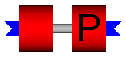
A revolute joint is a joint with 1 rotational degree of freedom.
An instance of this class is used as cut joint to break a kinematic
loop of a multibody system. Note, that a Revolute2Dloop joint can
only be used in a planar (2D) loop and NOT in a general 3D loop.
The reason is that in a 2D loop, e.g. the constraint force
orthogonal to the plane of the loop is not unique if only rigid
bodies are within the loop. For a unique solution, additional
assumptions have to be made, e.g., that this force is zero.
These additional assumptions are stated in class Revolute2Dloop.
Use class RevoluteCut3D , if a revolute joint has to be used as
cut joint in a 3D loop.
Parameters:
n: Axis of rotation with respect to the inertial frame in the
home position. n must not necessarily be a unit vector.
Based on n , two vectors npx and npy are constructed which
are perpendicular to n (e.g., if n=[0 0 1] then npx=[1 0 0]
and npy=[0 1 0]). The 2 constraint equations on position level
state, that the distance between the origins of frame_a and frame_b,
projected onto npx and npy is zero.
As constraint forces fc (= Lagrange multipliers) of the joint,
forces in the direction of npx and of npy are used. Due to the
assumed planar (2D) loop, the force in direction of n and the
torques in direction of npx and of npy are assumed to be zero.
| Name | Default | Description |
|---|---|---|
| n[3] | {0,0,1} | Axis of rotation in home position |
model Revolute2Dloop "Revolute joint used as Cut-Joint in a 2D-loop"
extends Interfaces.CutJoint;
parameter Real n[3]={0,0,1} "Axis of rotation in home position";
SI.Force fc[2] "Constraint forces in direction of npx,npy";
protected
Real constraintResidue[2];
Real constraintResidue_d[2];
Real constraintResidue_dd[2];
Real npx[3];
Real npy[3];
Real nnpx[3];
Real nnpy[3];
Real na[3];
Real nb[3];
equation
nnpx = if n[1] > 0 or n[1] < 0 then {0,1,0} else {1,0,0};
nnpy = cross(n, nnpx);
npy = nnpy/sqrt(nnpy*nnpy);
nb = n/sqrt(n*n);
npx = cross(npy, nb);
/*Transform axis of rotation from frame_b to frame_a*/
na = transpose(S_rel)*nb;
/*Constraint equations on position, velocity and acceleration level*/
constraintResidue = {npx*r_rela,npy*r_rela};
constraintResidue_d = {npx*v_rela,npy*v_rela};
constraintResidue_dd = {npx*a_rela,npy*a_rela};
constrain(constraintResidue, constraintResidue_d, constraintResidue_dd);
//constraintResidue = zeros(2);
/*Cut-forces/torques at frame_a/B as functions of the constraint forces*/
ta = zeros(3);
tb = zeros(3);
fa = [npx, npy]*fc;
fb = S_rel*fa;
end Revolute2Dloop;

A prismatic joint is a joint with 1 translational degree of freedom.
An instance of this class is used as cut joint to break a kinematic
loop of a multibody system. Note, that a Prismatic joint cannot
be used in a planar (2D) loop, since here e.g. the constraint force
orthogonal to the plane of the loop is not unique if only rigid
bodies are within the loop. For a unique solution, additional
assumptions have to be made, e.g., that this force is zero.
These additional assumptions are stated in class PrismaticCut2D .
Therefore use this class, if a prismatic joint has to be used as
cut joint in a planar loop.
Parameters:
n: Axis of translation with respect to the inertial frame in the
home position. n must not necessarily be a unit vector.
Based on n , two vectors npy and npz are constructed which
are perpendicular to n (e.g., if n=[1 0 0] then npy=[0 1 0]
and npz=[0 0 1]). The 5 constraint equations on position level state,
that the distance between the origins of frame_a and frame_b, projected
onto npx and npy, is zero and that the three essential elements of
the relative direction cosine matrix relating frame_a and frame_b
are zero as well.
The following constraint forces (= Lagrange multipliers) are used:
fc(2): Constraint forces in the direction of npy, npz in [N]
(fa = [npy, npz]*fc).
tc(3): Constraint torques in the direction of ta in [Nm].
| Name | Default | Description |
|---|---|---|
| n[3] | {1,0,0} | Axis of translation in home position |
model Prismatic "Prismatic joint used as Cut-Joint in a 3D-loop"
extends Interfaces.CutJoint;
parameter Real n[3]={1,0,0} "Axis of translation in home position";
SI.Force fc[2] "Constraint forces in direction of npy,npz";
SI.Torque tc[3] "Constraint torques in direction of ta";
protected
Real constraintResidue[5];
Real constraintResidue_d[5];
Real constraintResidue_dd[5];
Real npy[3];
Real npz[3];
Real nnpy[3];
Real nnpz[3];
Real nn[3];
equation
nnpy = if n[2] > 0 or n[2] < 0 then {1,0,0} else {0,1,0};
nnpz = cross(n, nnpy);
npz = nnpz/sqrt(nnpz*nnpz);
nn = n/sqrt(n*n);
npy = cross(npz, nn);
/*Constraint equations on position, velocity and acceleration level*/
[constraintResidue] = [npy*r_rela; npz*r_rela; S_rel[3, 2]; -S_rel[3, 1];
S_rel[2, 1]];
[constraintResidue_d] = [npy*v_rela; npz*v_rela; w_rela];
[constraintResidue_dd] = [npy*a_rela; npz*a_rela; z_rela];
constrain(constraintResidue, constraintResidue_d, constraintResidue_dd);
// constraintResidue = zeros(5);
/*Cut-forces/torques at frame_a/B as function of the constraint forces*/
fa = [npy, npz]*fc;
ta = tc;
fb = S_rel*fa;
tb = S_rel*ta - S_rel*cross(r_rela, fa);
end Prismatic;

A prismatic joint is a joint with 1 translational degree of freedom.
An instance of this class is used as cut joint to break a kinematic
loop of a multibody system. Note, that a Prismatic2Dloop joint can
only be used in a planar (2D) loop and NOT in a general 3D loop.
The reason is that in a 2D loop, e.g. the constraint force
orthogonal to the plane of the loop is not unique if only rigid
bodies are within the loop. For a unique solution, additional
assumptions have to be made, e.g., that this force is zero.
These additional assumptions are stated in class Prismatic2Dloop .
Use class PrismaticCut3D , if a revolute joint has to be used as
cut joint in a 3D loop.
Parameters:
n : Axis of translation with respect to the inertial frame in the
home position. n must not necessarily be a unit vector.
npz: Vector perpendicular to the planar loop (e.g., if the loop
contains a revolute joint, npz has the same direction
as the axis of rotation of the revolute joint).
Based on n and npz , vector npy is constructed which
is perpendicular to both of the two vectors.
The 2 constraint equations on position level state, that the
distance between the origins of frame_a and frame_b, projected
onto npy , as well as the projection of the three essential
elements of the relative direction cosine matrix onto npz ,
are zero.
As constraint force fc the force in the direction of npy , and
as constraint torque tc the torque in the direction of npz are
used, respectively. Due to the assumed planar (2D) loop, the force
in direction of npz and the torques in direction of npy and of
npz are assumed to be zero.
| Name | Default | Description |
|---|---|---|
| n[3] | {1,0,0} | Axis of translation in home position |
| npz[3] | {0,0,1} | Axis perpendicular to the loop plane |
model Prismatic2Dloop
"Prismatic joint used as Cut-Joint in a 2D-loop"
extends Interfaces.CutJoint;
parameter Real n[3]={1,0,0} "Axis of translation in home position";
parameter Real npz[3]={0,0,1} "Axis perpendicular to the loop plane";
SI.Force fc "Constraint force in direction of npy";
SI.Torque tc "Constraint torque in direction of npz";
protected
Real constraintResidue[2];
Real constraintResidue_d[2];
Real constraintResidue_dd[2];
Real npy[3];
Real nnpy[3];
Real nnpz[3];
Real nn[3];
equation
npy = cross(npz, n);
nn = n/sqrt(n*n);
nnpy = npy/sqrt(npy*npy);
nnpz = cross(nn, nnpy);
/*Constraint equations on position, velocity and acceleration level*/
[constraintResidue] = [npy*r_rela; npz*{S_rel[3, 2],-S_rel[3, 1],S_rel[2, 1]}
];
[constraintResidue_d] = [npy*v_rela; npz*w_rela];
[constraintResidue_dd] = [npy*a_rela; npz*z_rela];
constrain(constraintResidue, constraintResidue_d, constraintResidue_dd);
//constraintResidue = zeros(2);
/*Cut-forces/torques at frame_a/B as function of the constraint forces*/
fa = npy*fc;
ta = npz*tc;
fb = S_rel*fa;
tb = S_rel*ta - S_rel*cross(r_rela, fa);
end Prismatic2Dloop;